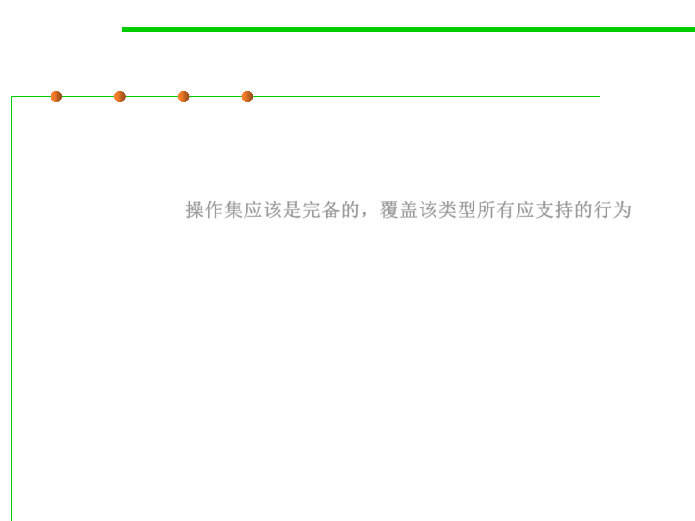

Designing an Abstract Type
3.3 Abstract Data Type (ADT)
▪ Rules of thumb 2
▪ The set of operations should be adequate in the sense that there
must be enough to do the kinds of computations clients are likely
to want to do. 操作集应该是完备的，覆盖该类型所有应支持的行为
– A good test is to check that every property of an object of the type can be
extracted. 判断方法：检查对象的每个需要被访问到的属性是否都能够被访
问到
– For example, if there were no get operation, we would not be able to find
out what the elements of a list are.
– Basic information should not be inordinately difficult to obtain. 提供基本
信息的获取方法
– For example, the size method is not strictly necessary for List, because we
could apply get on increasing indices until we get a failure, but this is
inefficient and inconvenient.